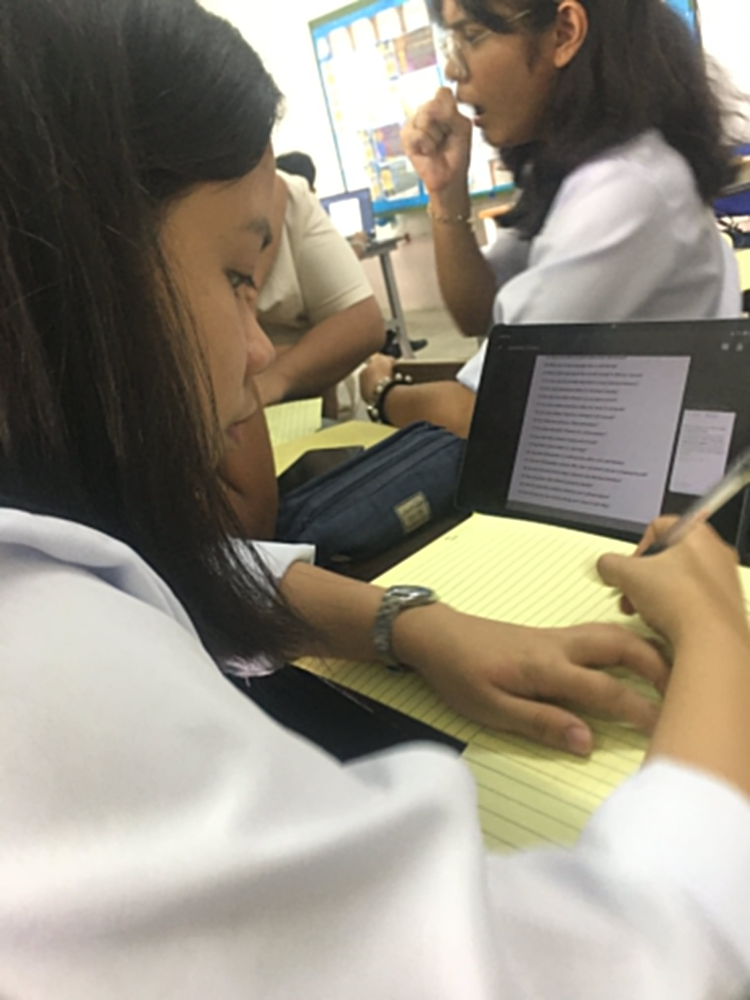
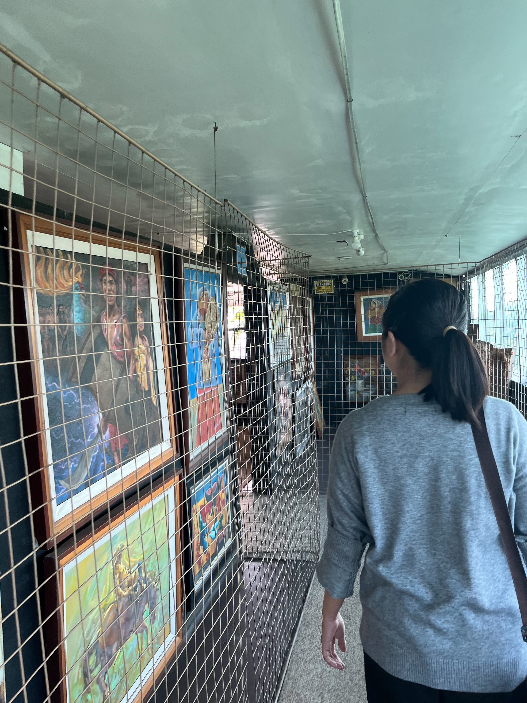

Journal Reflections on Growth & Awareness
By: Yesha Kate E. Sierra
Start ExploringIn all the activities and performances I did, I learned that self-concept refers to how I see and understand myself as a person. It includes my beliefs, traits, and roles in life. Before taking this subject, I thought self-concept was just about describing myself physically or based on what others say, but I realized that it is deeper and influenced by many factors such as my experiences, environment, and the people around me. Based on the theories we discussed, self-concept is shaped through social interaction and personal reflection. For example, the idea that our identity develops through feedback from others made me realize how much my family and friends affect how I see myself. Their opinions sometimes build my confidence, but there are also moments when negative comments make me doubt myself. Personally, I experienced this during my school life. There were times when I felt confident because my classmates appreciated my work, especially in group projects. However, there were also moments when I compared myself to others and felt like I was not good enough. These experiences showed me that my self-concept is not fixed but changes depending on my situation and environment. Through this lesson, I realized that I should not depend too much on others’ opinions when defining myself. I need to focus on understanding my own strengths and weaknesses. My self-concept should come from self-awareness and self-acceptance, not just external validation. In conclusion, self-concept plays a big role in shaping who I am. It continues to develop as I grow and experience new things, and I now understand the importance of building a positive and realistic view of myself.
In all the activities and performances I did, I learned that self-awareness is the ability to understand my own thoughts, emotions, and behaviors. It allows me to recognize why I act a certain way and how my actions affect others. Before, I did not pay much attention to my reactions, especially during stressful situations. Self-awareness is important because it helps individuals improve themselves. The theories we discussed emphasize that being aware of our internal and external behaviors can lead to better decision-making and emotional control. It is not just about knowing ourselves but also about being honest with what we discover. In my experience, I noticed that I tend to overthink and become anxious when facing academic pressure. During deadlines or exams, I sometimes panic instead of staying calm. Because of this subject, I became more aware of these patterns. I started to reflect on why I feel this way and how I can manage it better. This realization helped me improve my behavior. Instead of reacting emotionally, I try to pause and think before acting. I also learned to accept my weaknesses and work on them gradually. Self-awareness made me more responsible for my actions. Overall, self-awareness is important in personal growth. It allows me to understand myself better and make positive changes. As I continue to practice self-reflection, I believe I will become a better version of myself.
In all the activities and performances I did, I learned that self-esteem refers to how I value and see my worth as a person. It affects my confidence, decisions, and interactions with others. Before, I thought confidence only depended on achievements, but I realized that self-esteem is also about how I accept myself. Self-esteem can be influenced by experiences, especially success and failure. The theories we discussed explain that people with high self-esteem are more confident, while those with low self-esteem tend to doubt themselves. Social comparison also plays a role, as individuals compare themselves with others. In my life, I experienced moments of low self-esteem when I compared myself to classmates who perform better academically. I sometimes felt insecure and questioned my abilities. However, there were also times when I felt proud of my achievements, especially when I completed difficult tasks. Through this lesson, I realized that comparing myself to others is not always helpful. Instead, I should focus on my own progress. I learned to appreciate my efforts, even small ones. Building self-esteem takes time, but it is important to practice self-acceptance. In conclusion, self-esteem is essential in shaping how I see myself. By focusing on growth and accepting my imperfections, I can develop a healthier and stronger sense of self-worth.
In all the activities and performances I did, I learned that technology plays a significant role in shaping our identity and self-concept. Social media, in particular, allows people to present themselves in different ways. It can influence how we see ourselves and how others perceive us. The lessons discussed how technology can both positively and negatively affect the self. It allows connection and self-expression, but it can also lead to comparison and pressure. Many people tend to show only the best version of themselves online. In my experience, I use social media regularly, and I noticed that it sometimes affects my self-esteem. When I see others’ achievements or lifestyles, I tend to compare myself. However, I also use technology to express myself and stay connected with others. Through this lesson, I realized the importance of using technology responsibly. I should not let social media define my worth. Instead, I should use it as a tool for growth and communication. In conclusion, technology has a strong influence on the self, but it depends on how we use it. By being mindful, I can maintain a healthy relationship with technology and preserve my true identity.


THE IMPACT OF SOCIAL INFLUENCES ON MY SELF
In all the activities and performances I did, I learned that social influence refers to how people affect our behavior, thoughts, and decisions. This includes concepts like conformity, peer pressure, and social identity. I realized that many of my actions are influenced by the people around me. One important theory we discussed is conformity, which means adjusting behavior to fit in with a group. Social Identity Theory also explains how we define ourselves based on group membership. These concepts helped me understand why people act differently in different social situations. Personally, I experienced peer pressure in school. There were times when I followed what my friends were doing just to feel accepted, even if I was unsure. For example, I sometimes agreed with group decisions even when I had a different opinion. This showed how strong social influence can be. After learning about these concepts, I became more aware of my actions. I realized that while it is normal to be influenced by others, I should not lose my individuality. It is important to stand by my values and make my own decisions. In conclusion, social influence plays a big role in shaping behavior, but it is important to balance it with personal identity. Understanding this helps me become more independent and confident in my choices.